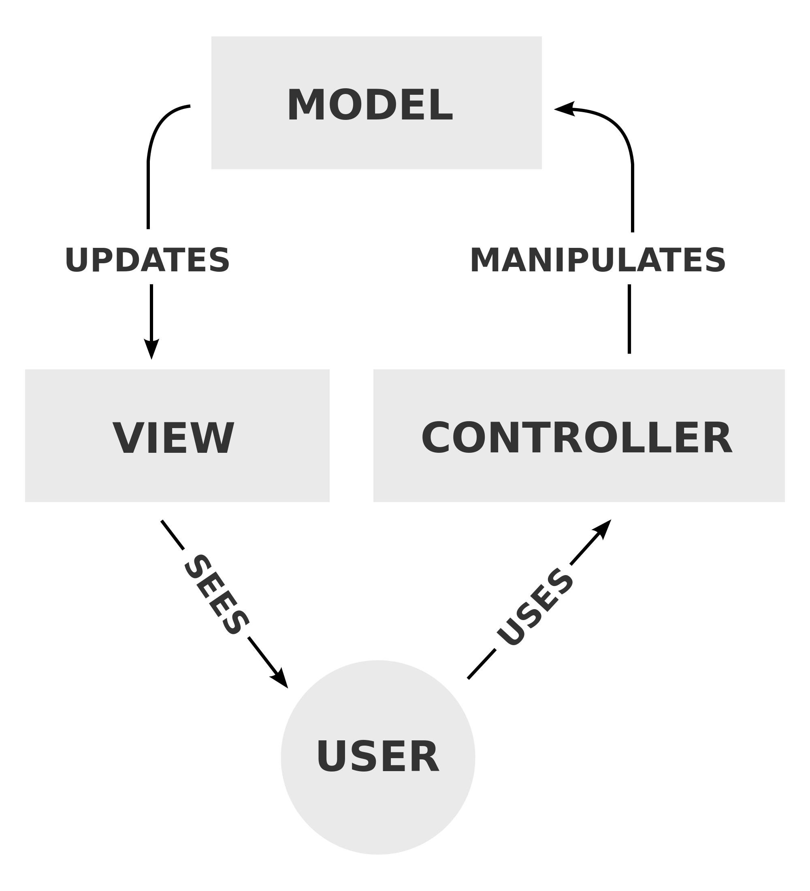

ng-coastal
The Future of Coastal.ca.gov?
by Zachariah Moreno
What do we want
for the future of
Coastal.ca.gov?
Here's My Wishlist
- Modular Organization
- Ease of Maintenance
- Data Driven Dynamic Content
- Extensibility
- High Performance
How can we
have our cake
& eat it too?
AngularJS

By Google
Vanilla HTML is great ...
@ making static linked documents
but it fails on dynamic content
AngularJS extends HTML
to facilitate dynamic content
But how?!?
- Everything you already know about HTML applies to Angular
- Everything is a module...the app is a module, each page is a module...modules depend on other modules
- Every request is asynchronous == speed & bandwidth savings
- Its easy to get data from a database onto the page...then filter it, search it, interact with it, etc.
Let's Dive a Little Deeper
Ng-Coastal
#1 Modular Organization
How are things organized?
MVC
M => Model => Data
V => View => Pages
C => Controller => Logic
separation of concerns
A standard way to organize a complex codebase
That's nice,
but how does MVC help
organize our real code?
File/Folder Structure
ng-coastal/
--- index.html
--- coastal.js
--- coastal.css
--- pages/
------ home/
--------- home.html
--------- home.js
--- images/
------ all images
--- components/
------ angularjs/
------ all 3rd-party additions
Does a visitor navigate to
coastal.ca.gov/pages/home/home.html?
NO!
that's where Routes come in
What are ROUTES?
URLs
- A visitor navigates to a page, by using a link to a route/URL
- Angular observes the route/URL change
- Determines the appropriate view/controller/model for that route/URL
- Replaces the old view with the new view
- Rinse, lather, repeat
file/folder structure ≠ URLs
structured flexibility
How is this
achieved
in our code?
*this background is misleading
& I have no idea what it means
index.html
‹html ng-app="coastal"›
‹head›
‹/head›
‹body›
‹/body›
‹/html›
Textbook stuff
coastal.js
angular.module('coastal', [
// global dependencies
'ngRoute',
// pages
'coastal.home',
...
])
// redirect to /home if attempted route does not exist
.config(['$routeProvider', function($routeProvider) {
$routeProvider.otherwise({redirectTo: '/home'});
}]);
Global/application module that ties everything together
We only need touch this file if we add a new page or module
home.js
angular.module('coastal.home', ['ngRoute'])
.config(['$routeProvider', function($routeProvider) {
$routeProvider.when('/home', {
templateUrl: 'pages/home/home.html',
controller: 'HomeCtrl'
});
}])
.controller('HomeCtrl', [function() {
...
}]);
We only need touch this file if we add logic to the home page/view
home.html
...
Nothing new here
We only need touch this file if add or update content to the home page/view
Ng-Coastal
#2 Ease of Maintenance
Want to edit an existing page's content?
it's the same process as today, except easier to locate because our file/folder structure mirrors our navigation
Want to add a new page?
- create a new folder under /pages where the page will live in the global nav
- create 2 new files...new-page.html & new-page.js
- link to the new-page.js file within /index.html
- copy & paste the boilerplate JS into new-page.js
- add the coastal.new-page module as a dependency in coastal.js
- add the new-page to the global nav in index.html
- add your new-page HTML within /new-page.html
Only steps 2, 4 & 5 are additions to our current process
Ng-Coastal
#3 Data Driven Dynamic Content
Data Output
- We create a new module, I'll call it Data
- Data is injected as a dependency of a home.js's controller like this
.controller('HomeCtrl', ['$scope', 'Data', function($scope, Data) { ... }]); - Then we make the Data available to home.html in our home.js controller like this
$scope.data = Data; - & in home.html we can template the data like this
{{ data }}
- Moreover, we can repeat many items like this
- {{ item }}
Data Input
Hello {{yourName}}
This approach is called
2-way data binding
& it's in Angular's core
Hello {{ yourName }}
Ng-Coastal
#4 Extensibility
Everything is a module
We've already extended Angular with modules for each page & for accessing our Data
Beyond that, Angular has a HUGE developer community that regularly Open Sources 3rd party modules
NG-Modules.orgNg-Coastal
#5 High Performance
AngularJS
applications
are fast
...faster than Usan Bolt
DEMO
What we can measure
We can optimize
AKA How things are today
- A visitor navigates to our homepage
- 100% of the resources are retrieved from the server
- The visitor navigates to another page
- 100% of the resources are retrieved from the server, even if we just had some of them
- Rinse, lather, repeat
How Angular handles resources
- A visitor navigates to our homepage
- 100% of the resources are retrieved from the server
- The visitor navigates to another page
- Rinse, lather, repeat
Only new resources
are retrieved
from the server
100% of resources are retrieved from the server
Only public-education.html & public-education.js are retrieved from the server
Aside from speed...
Saving resources
is a big deal
in the context of
mobile data plans/caps
So...
- Angular helps us organize our complex site into modules
- It is just as easy to maintain our content in Angular as it is today
- Angular makes data I/O easy, giving our visitors dynamic & interactive experiences
- Extending Angular is easy with both custom modules & Open Source 3rd party modules
- Angular is measurably faster than static Websites because everything is asynchronous
- We can save bandwidth by only sending/receiving what hasn't already been sent/received
The End
Thanks!